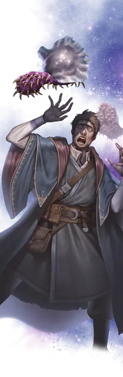

Паразит-кукловод
Puppeteer Parasite
Крошечная Аберрация, нейтрально-злая

Класс Доспеха 15 (природный доспех)
Хиты 71 (11к4 + 44)
Скорость 10 футов, летая 30 футов (парит)
| мод | спас | ||
|---|---|---|---|
| СИЛ | 2 | −4 | −4 |
| ЛОВ | 15 | +2 | +4 |
| ТЕЛ | 18 | +4 | +6 |
| мод | спас | ||
|---|---|---|---|
| ИНТ | 16 | +3 | +3 |
| МДР | 10 | +0 | +2 |
| ХАР | 3 | −4 | −4 |
Навыки Скрытность +4
Уязвимость к урону излучение
Сопротивление урону некротическая энергия, огонь, яд
Иммунитет к состояниям испуг, отравление, очарование
Чувства слепое зрение 60 футов (слеп за его пределами), пассивное Восприятие 10
Языки Телепатия 30 фт.
Опасность 3 (700 опыта)
Бонус мастерства +2
Особенности
Необычная природа. Паразит-кукловод не нуждается в воздухе и сне
Действия
Прицепка. . Рукопашная атака оружием: +4 к попаданию, досягаемость 5 фт., одно существо. Попадание: 12 (3к6 + 2) урона некротической энергией и паразит прикрепляется к цели. Пока паразит прикреплен к существу, он больше не может совершать Прицепку. Он может открепиться от цели, потратив 5 футов перемещения. Действием существо, в пределах досягаемости которого находится паразит, может попытаться открепить его, преуспев в проверке Силы Сл 14.
Истребление жизни. Паразит наносит 12 (3к6 + 2) урона некротической энергией существу, к которому он прикреплён, если оно не является Конструктом или Нежитью. Паразит восстанавливает количество хитов равное нанесённому урону.
Бонусные действия
Внушение (Псионика, 1/день). Базовой характеристикой кукольника является Интеллект, и он может накладывать заклинание внушение [suggestion] не нуждаясь в материальных компонентах (Сл спасброска от заклинания 13).
Описание
Паразит-кукловод выглядит как резиновая амёба размером с обеденную тарелку. Его тыльная поверхность мягкая и глянцевая, а брюшная поверхность усеяна костяными крючками. Паразит использует эти крючки, чтобы закрепиться на стене или потолке, пока поблизости не появится подходящая добыча.
Вступив в физический контакт с Гуманоидом, паразит использует свои крючки, чтобы вцепиться в него. Затем паразит может вытягивать жизненную энергию из этого существа или использовать его в качестве перевозчика. Также паразит может навязать свою волю находящемуся рядом существу, заставляя исполнять свои желания. Паразиты-кукловоды предпочитают использовать порабощённых Гуманоидов в качестве телохранителей и перевозчиков.